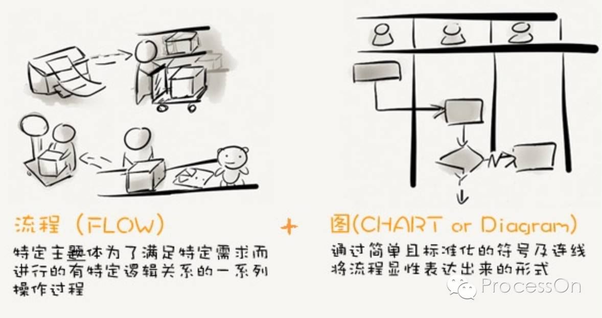
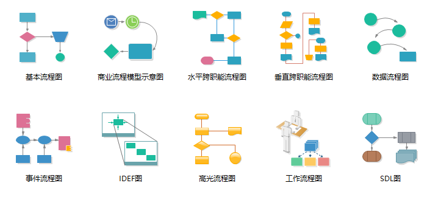
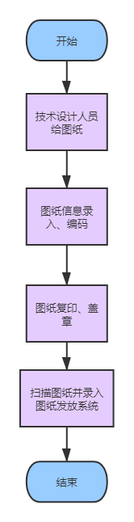
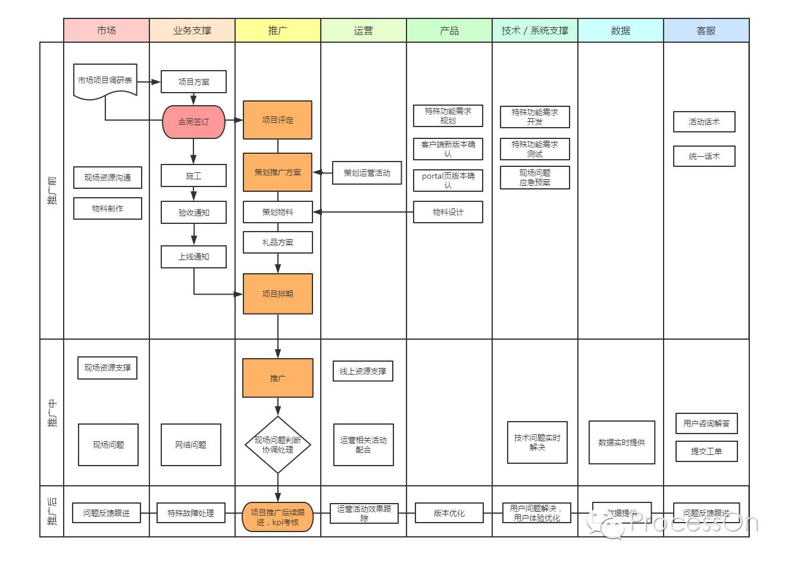
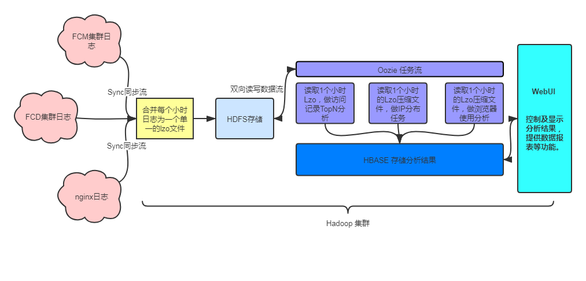
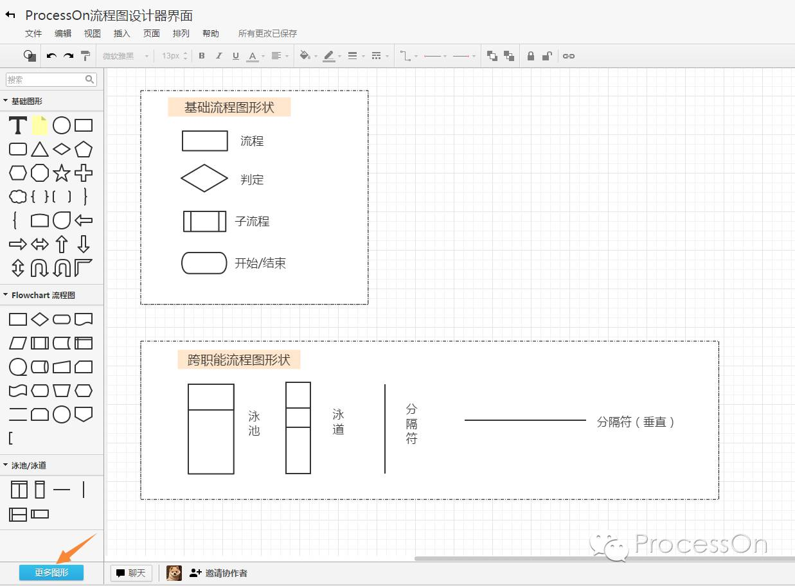
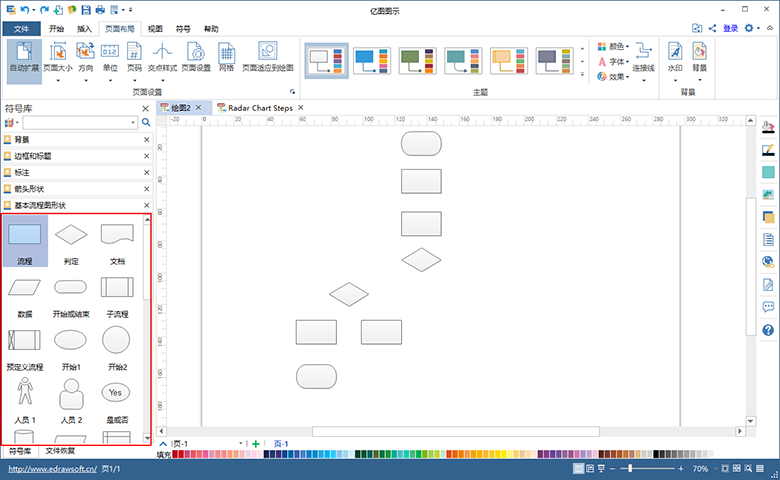

作为一个程序员，经常需要画流程图来展示系统的运行流程或者是来表述某些业务的业务逻辑。可以说画流程图已经是程序员必须掌握的一个技能了。本文就从什么是流程图、流程图的适用场景以及怎么画好一个流程图这几个方面来介绍下流程图的基本知识。
流程图=流程+图。

流程：Flow, 是指特定主体为了满足特定需求而进行的有特定逻辑关系的一系列操作过程，流程是自然而然就存在的。但是它可以不规范，可以不固定，可以充满问题。
图：Chart 或者 Diagram, 是将基本固化有一定规律的流程进行显性化和书面化，从而有利于传播与沉淀、流程重组参考。
所以流程图可以将一个任务的流程以图表的形式展示，让流程的展示更加直观，便于记忆和传播。
从上面的定义可以看出，只要有事情和任务，就会有流程。但是并不是所有的流程都适合用流程图的方式去表现，适合用流程图去表现的流程是一定程度固定的有规律可循的，流程中的关键环节不会朝令夕改的。
流程图的种类多达10种，归纳整理如下：

其中程序员平时用的比较多的有：
1. 基础流程图

2. 跨功能流程图（泳道图）

3. 数据流程图

在绘制流程图前，思考流程图如何才能精美，如何交互，使用什么工具，都不应该是重点。重要的是要将流程图的关键要素在脑海搜集一番。可以试图回答清楚以下几个问题，否则不要开始绘制流程图：
具体步骤，可以从以下几点着手
1. processon
ProcessOn是一个在线作图工具的聚合平台，它可以在线画流程图、思维导图、UI原型图、UML、网络拓扑图、组织结构图等等，
您无需担心下载和更新的问题，不管Mac还是Windows，一个浏览器就可以随时随地的发挥创意，规划工作
您可以把作品分享给团队成员或好友，无论何时何地大家都可以对作品进行编辑、阅读和评论
ProcessOn不仅仅汇聚着强大的作图工具，这里还有着海量的图形化知识资源我们尽可能的将有价值的知识进行梳理，传递到您的眼前

2. Edraw
支持的画图种类更多，Edraw可以非常容易地创建精美的流程图、思维导图、工业设计、组织结构、网络图、商业展示、建筑平面图、科学插画、电气工程图、方向图、数据库图表及更多260种绘图。也支持在线作图。大家可以按照自己喜欢的使用。
